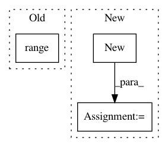

d7bd8bca1dd54a8255afffb462b84c8b9c3b7eca,torch_geometric/nn/functional/spline_gcn/edgewise_spline_weighting_cpu.py,_EdgewiseSplineGcn,backward,#_EdgewiseSplineGcn#Any#,33
Before Change
features_grad_in = torch.zeros(n, M_in).type_as(features_in)
weight_grad_in = torch.zeros(weight.size()).type_as(weight)
for k in range(self.m**self.dim):
b = self.amount[:, k] // [|E|]
c = self.index[:, k] // [|E|]
c_expand = c.contiguous().view(-1, 1).expand(c.size(0), M_out)
After Change
k_max = self.amount.size(1)
num_edges = input.size(0)
grad_input = grad_output.new(num_edges, M_in).fill_(0)
grad_weight = grad_output.new(K, M_in, M_out).fill_(0)
for k in range(k_max):
b = self.amount[:, k] // [|E|]
In pattern: SUPERPATTERN
Frequency: 3
Non-data size: 3
Instances
Project Name: rusty1s/pytorch_geometric
Commit Name: d7bd8bca1dd54a8255afffb462b84c8b9c3b7eca
Time: 2017-10-25
Author: matthias.fey@tu-dortmund.de
File Name: torch_geometric/nn/functional/spline_gcn/edgewise_spline_weighting_cpu.py
Class Name: _EdgewiseSplineGcn
Method Name: backward
Project Name: cornellius-gp/gpytorch
Commit Name: 531bc80bae88a5f240583bc19de9fc4f65e675a5
Time: 2017-08-01
Author: jrg365@cornell.edu
File Name: gpytorch/math/functions/interpolated_toeplitz_gp_marginal_log_likelihood.py
Class Name: InterpolatedToeplitzGPMarginalLogLikelihood
Method Name: backward
Project Name: Kaixhin/Rainbow
Commit Name: d5a60e49538e4f61fd46468895fa42df2a429d95
Time: 2017-11-11
Author: design@kaixhin.com
File Name: agent.py
Class Name: Agent
Method Name: learn